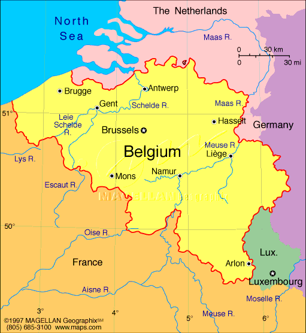

1. Dictionnaire du langage des signes, Vol. 3. (1985). Liège, Belgium: Massoz. (Thanks to Lisa Menard for translating the sign etymologies from the Belgian.)
1. Dictionnaire du langage des signes, Vol. 3. (1985). Liège, Belgium: Massoz. (Thanks to Lisa Menard for translating the sign etymologies from the Belgian.)
David Bar-Tzur

Flag: World flag database.
Map: Maps.com - "search" for country, then "Digital Map Graphics".
For a quick, interesting resource for facts about this and other countries,
try Mystic Planet - The New Age directory of Planet Earth.